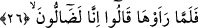
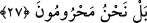

kullanılması, o kişinin kendini başkalarına karışmaktan engellemiş olduğundan
dolayıdır. Yine “engelleme” anlamını yansıtan “haredeti’s-senetu” cümlesi vardır ki
anlamı “sene, yağmurunu engelledi, bu sene kurak gitti” anlamınadır. Yine devenin,
sütünü engellemesi sebebiyle aynı fiil kullanılarak “haradeti’n-nâkatu” denir ki anlamı
“deve sütünü kesti” demektir. “Hard” kelimesi ayrıca “gazap” anlamına da gelir.
“Kadirîn” kelimesi, “ğadev” fiilinin fâilinden hâl-i mukaddere’dir. Çünkü ehl-i hakka
göre kudret fiil ile birlikte bulunur. Buna göre âyet-i kerîmenin mânâsı şu şekilde olur:
Onlar sabahın ilk saatlerinde fakirlerin bahçelerinden bir şey almasını engelleyerek -
zanlarınca- kendilerine fayda verebilecekleri ya da bahçelerindeki meyveyi devşirip
ekinleri hasad edebilecekleri zannıyla, buna kadir olduklarını düşünerek çıktılar. Ancak
bütün hasad ettikleri, faydasız şeylerden ve mahrûmiyetten ibâret oldu.
Keşşaf tefsirine göre; “onlar faydadan âciz ve sâdece faydasız şeyleri devşirmeye
güçleri yeter hâlde çıktılar” şeklindedir. Yâni onlar, kendilerine fayda vermeye kadir
olarak fakirleri mahrum etmek ve onları engellemek kararında oldular. Fakir düşmüş,
malları elden çoktan gitmiş bir hâlde sabahleyin dışarı çıktılar. Onlar, faydasız
şeylerden ve mahrûmiyetten başka hiç bir şeyi devşirmeye güçleri yetmez hâlde idiler.
Çünkü onlar, fakirleri mahrum etmeyi istemişlerdi. Fakat bizzat kendileri mahrûmiyet ve
meskenetle cezâlandırıldılar.
26. Fakat bahçeyi gördüklerinde: Mutlaka yolumuzu şaşırmış olmalıyız! dediler.
Bir başka ifâdeyle bahçelerinin helâk olduğunu gördükleri zaman birbirlerine; “biz
herhalde bahçemize giden yolu şaşırmış olmalıyız, bu yol bizim bahçemize giden yol
değildir herhalde” dediler. Neticede bahçenin, bıraktıkları gibi olmadığını gördüler.
27. Yok yok, doğrusu biz mahrum bırakılmışız!
Yâni bahçelerine gelen felâket üzerinde derinden derine düşünüp de gerçeği tam
olarak anladıklarında bu ifâdeyi kullandılar. Burada yer alan “bel” edâtı, daha önceki
söyledikleri sözden ve görüşten vazgeçtiklerini ifâde etmektedir. Bir başka ifâdeyle
onlar şöyle demiş oluyorlar: Bizler yolumuzu sapıtmış değiliz, tam tersine biz mahrum
bırakılmış kimseleriz. Bizler bahçemizin sağlayacağı faydalardan mahrum bırakılmışız.
Kötü niyetimiz sebebiyle kendimize zulmettiğimiz için, bahçemizden gelecek yararlara
ulaşmamıza engel olundu. Kötü niyetimiz ise fakirleri bahçemizden mahrum bırakmamız
ve fakirlerin hakkını vermemeyi istememizdir.